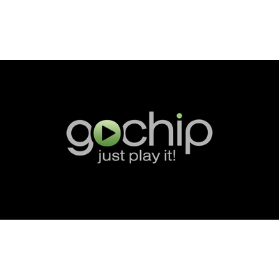
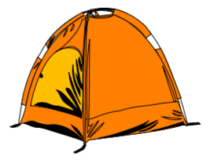
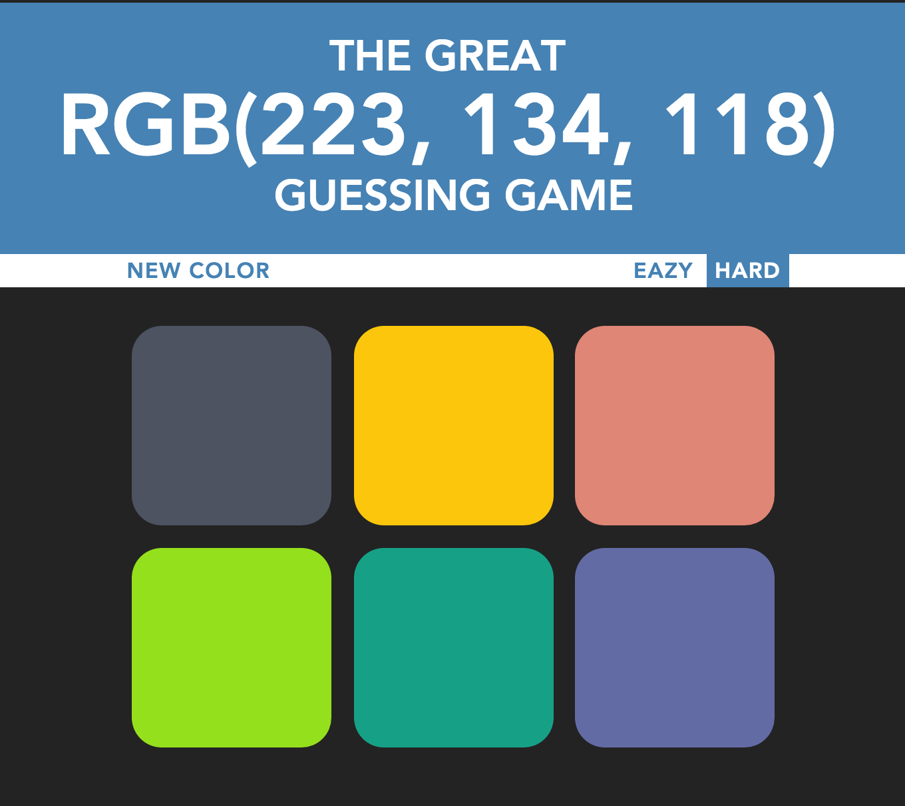

Hello, world! I'm a Software and Web developer
=> "Mumbai, India"
> Akshay.education
=> "Master of Science, California State University Chico"
=> "Bachelor of Engineering, YCCE, India"
> Akshay.major
=> "Computer Science"
> Akshay.skillSet
=> Languages: C, C++, Java, JavaScript, Python, SQL, PL/SQL, Swift
=> Web: HTML,CSS, jQuery,NodeJS, AngularJS, VueJs,JSON,RESTful APIs
=> Mobile: ReactNative, Android, iOS
=> Database: Oracle 10g/11g/12c, MongoDB (NoSQL)
=> Cloud Services: Amazon Web Services, Heroku
=> Tools: GIT, Slack, Trello, Google Test,Vim, Eclipse, Android Studio
=> Data Visualization: Microsoft PowerBI, Rapidminer, Oracle Data Modeler
> Akshay.resume
=> "akshaygore"
> Akshay.hobbies
=> ["learning new technologies", "Cooking", "Badminton "]
> Akshay.email
=> "akshaygore06@gmail.com"
> Akshay.phoneNumber
=> "408-921-5838"
Résumé
Education
 California State University
2014 - 2016
California State University
2014 - 2016
Computer Science, M.S.
Chico, CA
Relevant Coursework:
- Distributed Systems
- Object-Oriented Programming
- Algorithm and Data Structure
- Software Engineering
- Design and Analysis of Algorithms
- Mobile Application Development
- Operating Systems
- Advance Database Management System
 University of Nagpur
2008 - 2012
University of Nagpur
2008 - 2012
Computer Technology, B.E.
Nagpur, India
Relevant Coursework:
- Object-Oriented Programming
- Theory of Computation
- Software Engineering
- Design and Analysis of Algorithms
- Advance Microprocessor
- Operating Systems
- Database Management System
C++Embedded SystemsDBMS
Work Experience
Gochip Inc
March 2017 - Present
Software Development Engineer
Bothell, WA
Designed and Architected the customer facing e-commerce web store using VueJS and WordPress. Integrated the core services like Credit Card Processing, IP GeoFencing, Zendesk Knowledge base to the web stores. Integrated the Digital Rights Management (DRM) system into the mobile apps for protecting the studio content from the unauthorized users. Designed and developed the core features of mobile app using React Native, Java and objective C. Redesigned the desktop application to make it more user friendly using the Electron Framework, JavaScript. Performed Acceptance and UI Testing on Android & iOS app over more than 200 devices using Xamarin Test Cloud. Configure and maintain the MongoDB database instances and replica sets. Analyzed and visualized the customer data using MongoDB, D3js and Chart.js.
React NativeAndroidiOS
ElectronMongoDBVueJSJavaSciptSwiftObjective C
HTML/CSSWordPress
D3jsXamarin
Gochip Inc
February 2017 - March 2017
Web Designer/Developer
Chico, CA
Analyzed existing B2B website and developed more productive and secured solution using latest technologies like ReactJS, Redux, Nodejs and MongoDB. Worked with the creative team to design and develop the product oriented fully functioning ecommerce website.
HTMLCSSJavaSciptWordPressPhotoshop
Department of Computer Science, CSU Chico
June 2016 - December 2016
Graduate Teaching Associate
Chico, CA
Educated a class of 60 students on web development and object-oriented concepts to improve
their programing and cognitive skills. Created scholarly assignments to help understand workflows, data structures and algorithms.
C++JavaSciptAlgorthimsDATASTRUCTURES
Distributed Learning Technologies, CSU Chico
Jan 2016 - May 2016
Database Intern
Chico, CA
Designed and developed the report generation tool for BlackBoard Learn website. Analyzed LMS data of over 70,000 users to provide future solutions. Improved the efficiency by reducing the data retrieval time from 39 seconds to 23 seconds. Successfully implemented project management aspects of software development and version control.
SQLPL/SQLMS PowerBIGoogle AnalyticsORACLE 11GGitSlackTrelloSQL Data ModelerSQL Developer
 InboxMasters System Pvt Ltd.
2012 - 2014
InboxMasters System Pvt Ltd.
2012 - 2014
Software Engineer
Pune, India
Responsible for designing email marketing campaign, Requirement analysis, Data monitoring. Developed queries to target the specific users and maintain datasets as per clients requirment.Provided exceptional support throughout the requirements gathering, designing, development and deployment phase.
LINUXMySQLApache ServerMySQLPHP
Academic and Personal Projects
Mozilla Open Source Project
Spring 2016
Contributed towards the Mozilla Community.Tested,Verified and Resolve many CORE and documentation bugs. Worked on different distributed version control tools like Github and Mercurial.
C++HTMLCSSJava ScriptGITHUBMercurial
Book Tracking System
Fall 2015
Created a software solution for Office of Accessibility CSU Chico which keeps track of Alternate Media requests of the special student.
JavaORACLE 11G
HTMLCSSBootstrapJSPJava Script
 CampAlong - Social Networking Site
Fall 2016
It is a Social Networking Site for the Mountaineers, Campers and Nature Lovers. It's a best place where users can share their real life camping experiences and favorite camping locations with the world.
HTML
CSS
Bootstrap
MongoDB
Express
Node.js
PassportJS
RESTful
Heroku
Blogging Site
Fall 2016
It is a responsive blogging website with user login and sign up module. Users can write a blog on their favorite topics. Users can also comment on blogs and share their opinion with the world
HTML
CSS
SemanticUI
MongoDB
Express
Node.js
PassportJS
RESTful
Heroku
 GoldChase
Spring 2016
GoldChase
Spring 2016
Designed and developed a realtime multiplayer game using server-client communication. Worked on semaphores, shared memory and socket communication.
C++SemaphoreSocket ProgrammingServer-Client Communication
Musical Keyboard
Fall 2016
Developed an Musical Keyboard which produces a unique sound and animation for every key you are pressing...!!!!
HTML
CSS
Vanilla JS
jQuery
PaperJS
Howler JS
The Great Color Guessing Game
Fall 2016
Developed an color guessing in which players needs to guess the color for the RGB Color code given above. If the user guessed the correct color the user will win. There are two modes provided in this game i.e HARD and EASY.
HTML
CSS
Vanilla JS
Movie Search Engine
Fall 2016
It is an Movie Search Engine which helps user to find movies, tv series and Videos by with simple keyword search.
HTML
CSS
OMDb API
jQuery
MongoDB
Express
Node.js